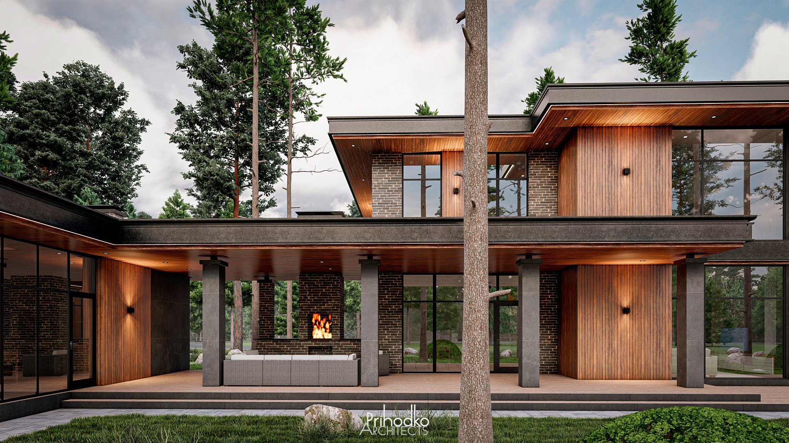
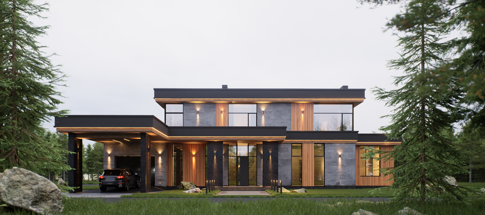
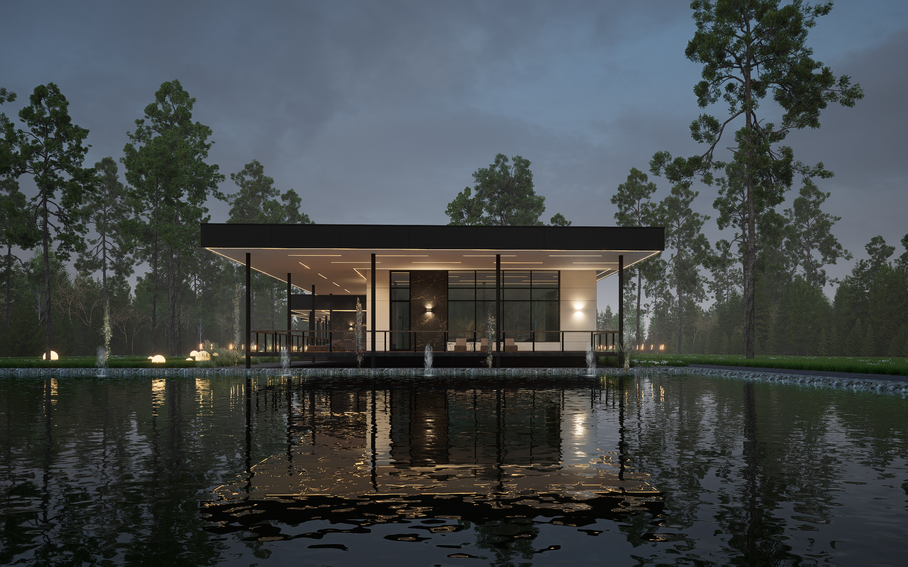
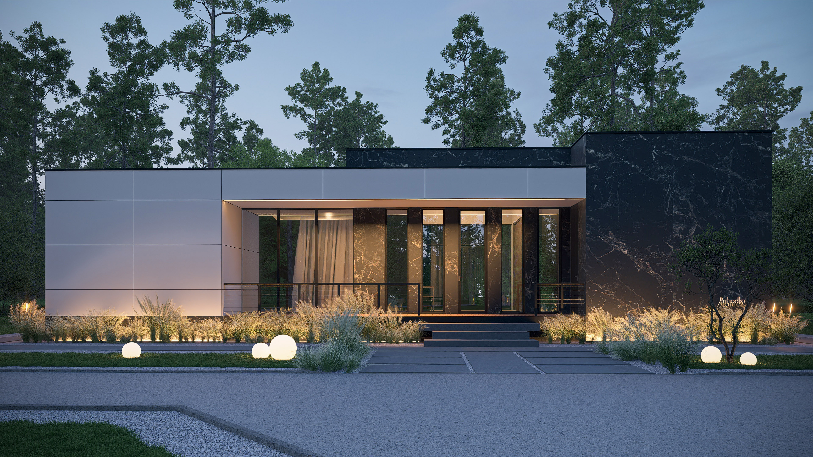
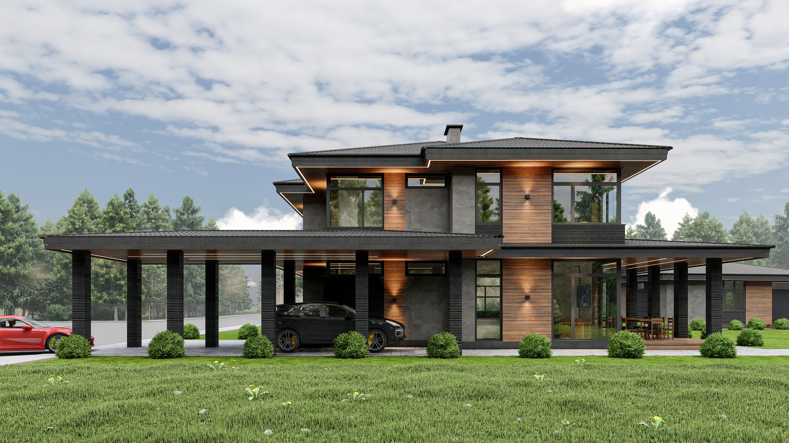

Избранные проекты

Частный дом, Московская область
Дом для постоянной загородной жизни семьи из четырёх человек. Главная задача — соединить приватность, свет и раскрытие дома к участку.

Дом в лесу, Подмосковье
Дом для семьи, в котором общественные и приватные зоны разделены через сценарии жизни.

Дом с панорамными видами
Проект, где архитектура, интерьер и ландшафт работают как единая система.

Дом у воды
Связь дома с природным ландшафтом как основа архитектурного решения.

Минималистичный дом
Честность материала и точность пропорций как главные инструменты.

Загородный дом, Калужская область
Открытое пространство, свет и связь с участком.